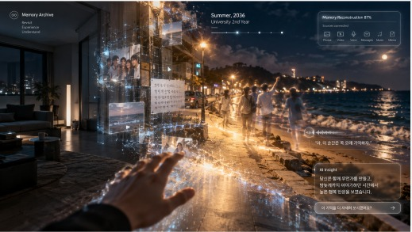
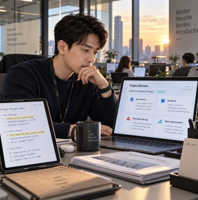
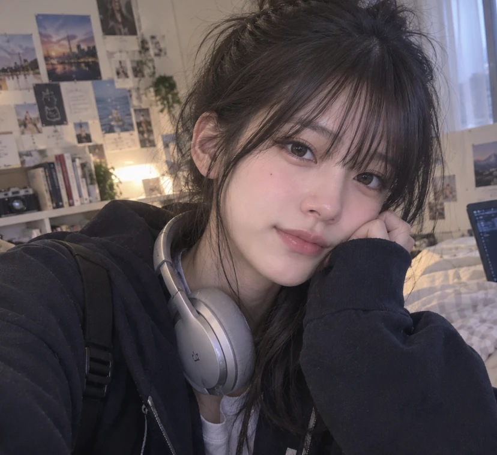
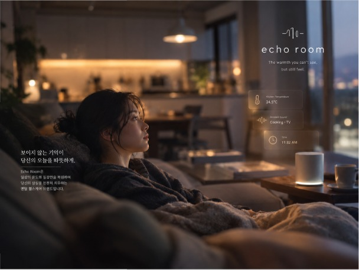
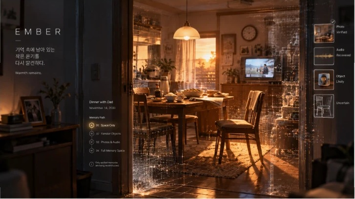

Future Experience · 기억의 디지털화
Memory Archive
기억을 공간처럼 탐색하는 서비스
사진영상메시지음악위치센서 기록
→ 키로 넘기기
01 · Direction우리가 본 미래
사진·영상·대화 기록이 쌓인 사회에서,
기억은 다시 방문하는 공간이 된다
기억을 공간처럼 탐색하는 서비스
02 · Concept기억을 다시 방문하는 사회
2045년, 사진은 정리하지 않는다
AI가 사용자의 평생 기록을 자동으로 분석해 ‘기억’ 자체를 하나의 디지털 공간으로 만들어 준다. 사용자가 이렇게 말하면,
“스무 살 때 친구들이랑
가장 행복했던 순간을 보여줘.”
AI가 사진, 영상, 메시지, 음악, 위치 기록 등을 조합해 당시 순간을 3D 공간으로 재구성한다.
- 01기억 검색공중에 떠 있는 수많은 기억 조각
- 02기억 공간 진입과거의 장소가 AI에 의해 재구성됨
- 03기억 편집·공유친구나 가족과 하나의 기억을 함께 감상
FRAGMENTS · 1,284SUMMER, 2036
03 · Scenario2048년, 32세 직장인 민준의 하루
20:40 · 귀가
민준은 퇴근 후 집으로 돌아온다. 오늘은 유난히 마음이 공허하다. 반복되는 업무와 빠르게 흘러가는 일상 속에서, 문득 자신이 예전보다 덜 웃고 있다는 생각이 들었다.
20:42 · 감지
집에 들어오자 거실 벽면의 인터페이스가 조용히 켜진다. 개인 AI는 민준의 표정과 목소리, 최근 수면 데이터와 활동량을 분석해 낮은 정서 상태를 감지한다.
“오늘은 조금 지쳐 보이네요. 기분을 환기할 수 있도록, 예전에 당신이 가장 즐거워했던 순간들을 함께 보시겠어요?”
20:43 · 요청
민준은 잠시 고민하다가 말한다.
“대학교 2학년 여름… 친구들이랑 밤바다 보러 갔던 날 기억나?”
AI는 몇 초간 데이터를 불러온다. 그날의 사진, 짧은 영상, 메시지 대화, 위치 기록, 당시 재생했던 음악, 민준이 남긴 메모, 그리고 친구들과 나눴던 음성까지 연결된다.
20:43 · 재구성
눈앞에는 어두운 방 대신 여름 밤의 바닷가 산책로가 펼쳐진다. 완전히 현실과 똑같지는 않지만, 충분히 익숙하고 따뜻하다.
파도 소리와 바람 소리, 멀리서 웃는 친구들의 소리, 가로등 불빛 아래 흔들리던 그림자까지 재구성된다.
20:47 · 걷기
민준은 공간 안을 천천히 걷는다. 모래사장 쪽에는 그날 찍은 사진들이 작은 빛 조각처럼 떠 있고, 특정 위치에 다가가면 그 자리에서 오간 대화 일부가 재생된다.
“야, 이 순간은 꼭 오래 기억하자.”
그날 친구가 웃으며 했던 말이 다시 들린다. 민준은 멈춰 선다.
20:52 · 연결
“이 장면을 더 자세히 보시겠어요? 아니면 이 기억과 연결된 다른 순간으로 이동하시겠어요?”
민준은 “이날 이후의 여름들”을 선택한다. 같은 사람들과 함께한 다른 계절의 기억들이 갈래처럼 뻗어 나온다.
민준은 깨닫는다. 지금의 자신은 단절된 현재가 아니라, 수많은 장면 위에 이어져 있는 존재라는 것을.
21:05 · 발견
잠시 후 AI가 작은 카드를 띄운다. 민준은 그 문장을 보고 생각한다.
“아, 내가 단순히 피곤한 게 아니라, 내가 좋아하던 시간을 잃고 있었구나.”
21:08 · 현재로
그는 오래된 친구에게 메시지를 보낸다.
“오랜만에 만나자. 예전처럼 밤에 아무 데나 걸으면서 얘기하고 싶다.”
Memory Archive는 과거를 보여 주는 데서 끝나지 않는다. 그 기억을 통해 현재의 감정과 삶의 방향을 다시 이해하도록 돕는 것, 그것이 이 서비스의 진짜 역할이다.

LIVING ROOM · 20:40AI INSIGHT당신은 ‘함께 무언가를 만들고, 밤늦게까지 이야기하던 시간’에서 높은 행복 반응을 보였습니다. 최근 6개월간 이와 유사한 경험은 거의 없었습니다.
TO. 오래된 친구오랜만에 만나자. 예전처럼 밤에 아무 데나 걸으면서 얘기하고 싶다.
04 · User Types기억을 대하는 네 가지 방식
어떻게 남기고, 어떻게 꺼내 쓰는가
분석 · 활용
기록 · 보존
선택적 기록
자동 축적
- ①의미 탐색형실수에서 답을 찾는다

김도윤 - ②라이프 분석형일상 데이터로 나를 알아간다

장민소 - ③추억 보관형소중한 순간을 오래 남긴다 이다희
- ④일상 아카이브형무의식의 일상에서 온기를 찾는다 강서윤
두 가지 기준으로 나눴다
- 가로
- 기록 방식 — 중요한 순간을 직접 고르는가(선택적 기록), 생활 데이터가 저절로 쌓이는가(자동 축적)
- 세로
- 기억 활용 — 남겨 두고 다시 보는가(기록·보존), 분석해서 지금에 쓰는가(분석·활용)
→ 를 누르면 유형별로 볼 수 있다
① 의미 탐색형
김도윤 34 · 직장인
“실수에서 답을 찾는다”
- 인물
- 실수와 업무 과정을 기록하는 직장인
- 기록 방식
- 중요한 사건을 직접 선택해 기록
- 기억 활용
- 원인 분석, 개선, 자기계발
② 라이프 분석형
장민소 25 · 프리랜서
“일상 데이터로 나를 알아간다”
- 인물
- 일상을 살아가며 자신을 알아가는 사람
- 기록 방식
- 생활 데이터가 자연스럽게 자동 축적
- 기억 활용
- 취향·습관·감정 패턴 발견
③ 추억 보관형
이다희 26 · 공간 브랜딩 에이전시
“소중한 순간을 오래 남긴다”
- 인물
- 친구들과 여행을 즐기는 사람
- 기록 방식
- 특별한 순간을 직접 기록
- 기억 활용
- 소중한 순간을 오래 보존
④ 일상 아카이브형
강서윤 36 · 데이터 분석가
“무의식의 일상에서 온기를 찾는다”
- 인물
- 평범한 일상을 기록해 두었다가 잃어버린 사람을 회상하는 사람
- 기록 방식
- 평소 의식하지 않아도 일상이 자동 축적
- 기억 활용
- 시간이 지난 뒤 기억을 찾아 회상
- 나이
- 34 · 남성
- 직업
- 직장인 (8년 차 프로젝트 매니저)
선택적 기록자동 축적
분석·활용기록·보존
① 의미 탐색형 · 실수에서 답을 찾는
김도윤Profile 01
“같은 실수를 반복하지 않을 수 있다면 기록해 두고 다시 돌아볼 가치가 있지”
PAIN POINTS
- 흩어진 기록으로 인한 과거 상황 파악의 어려움
- 반복되는 실수와 판단 패턴 인식의 한계
- 기록이 실질적인 개선으로 이어지지 않음
NEEDS
- 중요한 경험과 자료의 통합 기록
- 유사 사례 및 반복 패턴 자동 분석
- 다음 행동으로 연결되는 구체적인 개선 가이드
USER SCENARIO
오후 4시, 도윤은 신규 서비스 프로젝트의 일정 조율 회의에서 개발 진행률을 확인한 뒤 출시 일정을 일주일 앞당기는 방향으로 회의를 정리한다. 하지만 회의 직후 아직 검증되지 않은 핵심 기능이 남아 있다는 이야기를 듣고, 테스트 일정과 위험 요소를 충분히 확인하지 않고 판단했다는 것을 깨닫는다.
도윤은 이 상황을 Memory Archive에 직접 기록한다. 회의 내용과 프로젝트 일정, 팀 메시지를 함께 저장하고 “진행률만 보고 결정함. 다음에는 테스트 일정과 위험 요소까지 확인할 것.”
이라는 메모를 남긴다.
퇴근 전, AI는 과거 프로젝트 중 일정 압박으로 세부 위험 요소를 늦게 확인했던 사례를 찾아 보여 준다. 도윤은 자신의 판단에서 반복되는 패턴을 알게 되고, 중요한 결정 전 확인할 항목을 정리해 다음 프로젝트에 적용한다.
CHARACTERISTICS
- 중요한 실수와 판단 과정을 선택적으로 기록
- 반복되는 패턴을 분석해 개선점 도출
- 체계적인 자기관리와 업무 성장 중시
“중요했던 실수들을 그때그때 기록해 두고, 나중에 비슷한 상황이 왔을 때 쉽게 찾아볼 수 있으면 좋겠어.”
- 나이
- 25 · 여성
- 직업
- 프리랜서
선택적 기록자동 축적
분석·활용기록·보존
② 라이프 분석형 · 일상 데이터로 나를 알아가는
장민소Profile 02
“기록은 AI가 알아서 해 줘. 난 그걸 보고 내가 어떤 사람인지 알고 싶어”
PAIN POINTS
- 쌓인 데이터가 너무 많아 스스로 의미를 찾기 어려움
- AI 분석 결과의 근거가 보이지 않아 믿기 어려움
- 감정 맥락을 놓친 AI의 잘못된 분류
NEEDS
- 흩어진 일상 데이터의 자동 패턴 분석
- 분석 결과의 근거가 된 기억 조각 확인
- AI 해석을 직접 수정하고 다음 분석에 반영
USER SCENARIO
마감이 몰린 한 달을 보내고 지친 민소는 출퇴근도 정해진 일과도 없어, 어떤 날 컨디션이 좋았는지 스스로도 잘 모른다. 일기를 쓰거나 사진을 정리하는 편도 아니다.
“최근 석 달 동안 내가 제일 편안해 보였던 순간들 보여줘.”
AI가 위치 기록, 음악 재생 기록, 메시지, 사진을 분석해 기억 조각 몇 개를 띄운다. 대부분 오전이었고, 동네 도서관이었고, 휴대폰 알림을 꺼 둔 날이었다. 조각 하나에 들어가니 도서관 창가 자리와 그날 듣던 음악이 재구성되고, 민소는 혼자 조용히 작업한 날이 더 편안했다는 걸 처음 알게 된다.
그런데 친구와 크게 다툰 날이 “대화가 많았던 즐거운 날”로 분류된 걸 발견한다. 민소는 그 분류를 직접 고치고, 다음 달 오전 작업 시간을 도서관으로 잡아 둔다.
CHARACTERISTICS
- 불규칙한 프리랜서 일상 속에서 자신의 컨디션과 취향을 파악하려는 성향
- 직접 기록하지 않고 AI가 자동으로 쌓은 데이터를 분석해 활용
- 분석 결과를 일정과 생활 습관 조정에 바로 반영
“내가 뭘 좋아하는지 데이터가 먼저 알고 있더라. 근데 틀린 건 내가 고쳐 줘야 해.”
- 나이
- 26 · 여성
- 직업
- 공간 브랜딩 에이전시
선택적 기록자동 축적
분석·활용기록·보존
③ 추억 보관형 · 소중한 순간을 영구 보존하는
이다희Profile 03
“단순히 사진 한 장 넘겨 보는 건 아쉬워요. 우리가 함께 웃고 떠들던 그 장소의 공기 자체를 남기고 싶어요.”
PAIN POINTS
- 친구들 각자의 기기와 메신저에 기록이 흩어져 있어 하나의 공간으로 모으기 번거로움
- 2D 사진만으로는 당시의 현장감과 감정이 시간이 갈수록 흐려짐
- 공동 아카이브를 만들고 공유할 때, 각자가 원하는 기억의 우선순위가 달라 생기는 조율 부담
NEEDS
- 흩어진 멀티미디어 기록을 하나의 3D 공간으로 통합
- 원거리 친구들과 언제든 같은 기억 공간에 모일 수 있는 실시간 동시 접속 환경
- 세월이 흘러도 변질되거나 유실되지 않는 기억 데이터의 안정적 보존
USER SCENARIO
프로젝트 마감에 지친 금요일 밤, 다희는 텅 빈 거실에서 대학 시절 친구들과 떠났던 여행의 온기가 그리워진다. 단톡방조차 뜸해진 일상 속에서 그때의 유대감을 다시 느끼고 싶어 Memory Archive를 켠다. “4년 전 친구들이랑 다 같이 떠났던 첫 제주 여행 틀어 줘.”
AI가 친구들이 모아 둔 사진, 영상, 현장 음성, 음악, 동선 데이터를 엮어 내고, 거실 벽면이 확장되며 노을 진 애월 해변 산책로가 3D 공간으로 재구성된다. 벤치 위엔 필름 사진과 단톡방 대화가 빛 조각처럼 떠 있고, 접속 알림을 본 친구 수아가 공간에 들어온다. “다희야, 이거 그때 렌터카 펑크 났던 그 해변이잖아!”
시간의 공백은 금세 지워진다. “다음 주말에 진짜 얼굴 한번 보자.”
CHARACTERISTICS
- 친구들과의 여행, 페스티벌, 기념일 등 특별한 순간을 직접 선별해 기록하는 성향
- 사진뿐만 아니라 당시의 웃음소리, 음악, 공간감까지 입체적으로 체험하길 원함
- 개인의 고립된 기록보다 지인들과 함께 공유하고 교감하는 공동의 기억을 중시
- 나이
- 36 · 여성
- 직업
- 데이터 분석가
선택적 기록자동 축적
분석·활용기록·보존
④ 일상 아카이브형 · 무의식의 일상에서 온기를 찾는
강서윤Profile 04
“사진 속 활짝 웃는 얼굴보다, 거실을 채우던 따뜻한 온도와 무심한 도마 소리가 더 그리울 때가 있어.”
PAIN POINTS
- 직접적인 시각적 추억 회피
- 텅 빈 정적이 주는 숨 막힘
- 일상 기록의 부재로 인한 상실감
NEEDS
- 안전하고 간접적인 애도 공간
- 무의식적 일상(루틴)의 복원
- 데이터 속에서 온기 발견
USER SCENARIO
퇴근 후 텅 빈 집으로 돌아온 서윤. 적막감에 숨이 막힐 듯한 외로움을 느끼지만, 남겨진 어머니의 사진이나 영상을 여는 것은 감당하기 힘들어 피하고 있다.
대신 서윤은 말한다. “작년 11월 일요일 아침 10시쯤, 주방 쪽 데이터로 맞춰 줄래?”
AI는 스마트홈 센서에 쌓였던 공간 음향(달그락거리는 식기 소리, 낮게 깔린 TV 백색소음)과 주방 온도(24.5도)를 조용히 재구성한다.
평소보다 느리고 조심스럽게 닫히던 방문 소리, 서윤이 깨기 전 미리 데워 두었던 거실 바닥의 온기 데이터를 확인하며, 무심히 흘려보냈던 일상 속 묵묵한 애정을 뒤늦게 깨닫는다. 서윤은 익숙한 일상의 조각들 속에서 위안을 얻으며 천천히 상실감을 극복해 나간다.
CHARACTERISTICS
- 의도적으로 남긴 사진이나 영상이 아닌, 센서에 의해 자연스럽게 남겨진 생활 로그
- 시각적 이미지는 상실감을 자극하므로 청각과 촉각 같은 공간의 감각으로 기억을 떠올림
- 직접적인 슬픔을 마주하는 것보다 자신만의 안전한 공간에서 간접적인 방식으로 상처를 치유
09 · Journey Map네 사람이 Memory Archive를 쓰는 과정
1이용 전
2이용 중
3이용 후
사용자
- 같은 실수를 반복하지 않기 위해 중요한 업무 경험을 남기고 싶어 함
- 과거의 유사한 상황과 판단 과정을 빠르게 찾아볼 수 있길 기대함
- 회의 기록, 메신저, 일정표 등 흩어진 자료를 하나로 정리함
- 과거의 유사한 실수와 반복되는 판단 패턴을 확인함
- AI 분석을 통해 놓쳤던 위험 요소와 원인을 발견함
- 자신의 판단 습관과 반복되는 실수의 원인을 구체적으로 이해함
- 분석 결과를 체크리스트로 정리해 다음 프로젝트에 바로 적용함
생각·감정
“이번 실수도 그냥 지나가면 다음에 또 반복할 것 같은데.”“예전에 비슷한 상황이 있었는지 바로 확인할 수 있으면 좋겠다.”“내가 반복하는 판단 방식이 보이니까 다음에는 더 잘할 수 있을 것 같아.”
앱 기능
중요 기억 직접 저장유사 사례 검색개선 체크리스트 생성
AI 개선
- 회의·메신저·문서 등 흩어진 업무 기록의 자동 연결
- 과거의 유사한 실수와 반복 패턴을 빠르게 추천
- 분석 결과를 바로 적용할 수 있는 행동 가이드 및 체크리스트 제공
맥락
1이용 전
2이용 중
3이용 후
사용자
- 직접 기록하지 않아도 자신의 생활 패턴을 알고 싶음
- 컨디션이 좋았던 날의 공통점을 찾아 일상에 적용하길 기대함
- 기억 조각이 너무 많아 어떤 기준으로 골랐는지 파악하기 어려움
- 분석 결과의 근거를 확인하려면 조각을 하나씩 열어 봐야 해 번거로움
- 감정이 반대인 날이 잘못 분류돼 있어 결과 전체를 의심하게 됨
- 몰랐던 자신의 패턴을 발견하고 일정을 바꾸며 만족감을 느낌
- 잘못된 분류를 고친 뒤에도 다음 분석에 반영될지 확신이 없음
생각·감정
“내가 혼자 있을 때 더 편했구나. 이건 몰랐네.”“친구랑 싸운 날이 즐거운 날이라고? 이건 좀 아닌데.”
앱 기능
기억 검색패턴 분석 요약분류 수정
AI 개선
- 분석 결과마다 근거가 된 데이터 함께 표시
- 공통점을 한눈에 보여 주는 패턴 요약 화면
- 사용자가 고친 분류를 다음 분석에 반영
- 분석 결과를 일정·루틴 추천으로 연결
맥락
1이용 전
2이용 중
3이용 후
사용자
- 친구들과의 소중한 순간을 단순 사진이 아닌 생생한 공간으로 남기고 싶음
- 플랫폼 변경 시 공들여 모은 추억이 유실될까 우려함
- 3D 공간으로 구성하는 과정에서 피로감 느낌
- 친구들과 공동 아카이브를 편집·공유할 때 각자의 기억 우선순위나 비공개 장면 조율에 신경 쓰임
- 재구성된 공간이 실제 기억의 현장감·공기감과 미묘하게 다를 때 아쉬움 발생
- 멀리 떨어진 친구들과 당시 공간에 동시 접속해 추억을 나눌 때 깊은 정서적 충만감 체감
- 세월이 지나도 변질 없이 꺼내 볼 수 있는 온전한 공동 기록이 완성되어 만족함
생각·감정
“평면 사진 한 장 보는 건 아쉬운데, 그때 우리가 함께 웃고 떠들던 그 장소의 공기 속에 다시 서 있는 기분이라 뭉클하다.”“몸은 멀리 있어도 이렇게 같은 공간에 접속해 이야기하니까 그때로 돌아간 것 같아 든든하다.”
앱 기능
공간 아카이브 모드다중 미디어 3D 융합 복원실시간 동시 접속 및 공동 편집/감상 모드
AI 개선
- 여러 메신저 및 클라우드 링크를 통한 원클릭 공동 데이터 수집/동기화 지원
- 공동 아카이브 공유 시 개인별 미디어 공개 범위 및 블러 설정 등 프라이버시 조율 옵션 제공
- 당시의 현장 소리, 날씨, 배경음악 등 감각적 디테일(공기감) 재현의 정확도 강화
맥락
1이용 전
2이용 중
3이용 후
사용자
- 텅 빈 집의 적막감에 숨 막힘을 느낌
- 사진이나 영상 등 직접적인 시각 자극은 회피하려 함
- 시각 위주의 하이라이트 추천이 뜨면 부담감을 느낌
- 시각 필터를 끄고 환경/음향 데이터 중심으로 탐색함
- 특정 시간대의 백색소음(주방 소리 등)을 공간에 재생함
- 익숙한 소리로 공간이 채워지며 깊은 안정감을 느낌
- 무심한 로그 데이터 속에서 배려를 발견하고 죄책감을 덜어 냄
생각·감정
“환하게 웃는 얼굴은 아직 감당하기 힘들어. 그냥 특별할 것 없던 작년 일요일 아침, 도마 소리와 TV 소리만 배경처럼 들려줘.”
앱 기능
감각(시각/청각/촉각) 데이터 필터링앰비언트 재생 모드 (백그라운드 재생)IoT 환경 로그(온도, 조명 등) 동기화
AI 개선
- 감정 민감도를 고려한 ‘안전 모드(시각 데이터 원천 차단)’ 도입
- 장시간 틀어 두어도 이질감 없는 공간 음향 믹싱 기술
- 수치형 데이터(온도/문 닫힘 등)의 감성적 해석 제공
맥락
Brand 01의미 탐색형 · 라이프 분석형
TRACEMEMORY INTELLIGENCE
“기억을 저장하는 것이 아니라, 기억에서 의미를 찾는다.”
개인의 사진, 메모, 업무 기록, 메시지 등을 하나의 Memory Intelligence로 연결한다. 김도윤 같은 사용자에게는 과거 프로젝트를 분석해 반복되는 실수를 찾아 주고, 일반 사용자에게는 “나는 어떤 음악을 좋아했는가”, “언제 가장 행복했는가” 같은 생활 패턴을 발견하게 해 준다.
중요한 건 AI가 마음대로 기억을 만들어 내는 게 아니라, 실제 기록 / 사용자가 직접 남긴 기억 / AI가 추정한 부분을 명확히 구분한다는 것.
실제 기록 62%직접 남긴 기억 24%AI 추정 14%
AI RECONSTRUCTION CONFIDENCE87%

Brand 02일상 아카이브형
Echo Room에코 룸 · AMBIENT THERAPY
“보이지 않는 기억이 당신의 오늘을 따뜻하게.”
‘보이지 않는 기억’을 다루는 멘탈 헬스케어 및 공간 제어 브랜드. 화려하고 자극적인 시각 데이터(사진, 홀로그램) 대신, 스마트홈 기기가 무의식적으로 수집해 온 환경 데이터(보일러 온도 변화, 문이 닫히는 속도, 가전제품의 백색소음)에 집중한다.
부재하는 가족의 얼굴을 억지로 들이밀지 않고, 주방에서 들려오던 도마 소리와 거실 바닥의 따뜻한 온도만을 재현해 정적을 밀어낸다. 슬픔을 강요하지 않고 일상 속에서 천천히 애도할 수 있는 안전지대를 만든다.
- 설립 목적 · 시각적 자극을 배제하고, 일상의 온도와 질감만을 복원해 안전하고 점진적인 상실감 치유를 돕는다
- 타깃 니즈 · 직접적인 시각적 추억 회피, 정적이 주는 숨 막힘 해소, 무의식적 일상의 복원

Brand 03상실과 애도
EMBERWARMTH REMAINS
“기억 속에 남아 있는 작은 온기를 다시 발견하다.”
떠난 사람을 AI로 되살려 대화하는 서비스가 아니라, 함께했던 실제 일상의 흔적을 안전하게 다시 경험하는 서비스. “아버지와 마지막으로 같이 저녁을 먹었던 날”을 검색하면, 그날의 사진, 집의 구조, TV 소리, 자주 듣던 음악, 식탁의 위치, 메시지 같은 실제 데이터로 그날의 공간과 분위기를 복원한다.
- 01목소리 없이 공간만 보기SPACE ONLY
- 02일상의 물건 보기FAMILIAR OBJECTS
- 03사진 보기PHOTOS & AUDIO
- 04기억 공간 체험FULL MEMORY SPACE
Memory Archive
기억을 보여 주는 데서 끝나지 않는다.
그 기억으로 지금의 감정과 삶의 방향을
다시 이해하도록 돕는다.